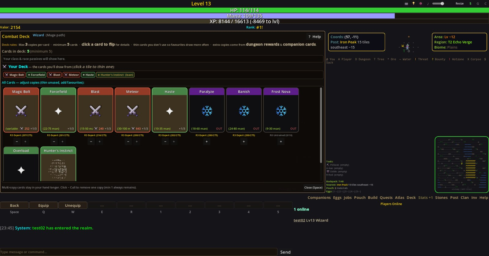
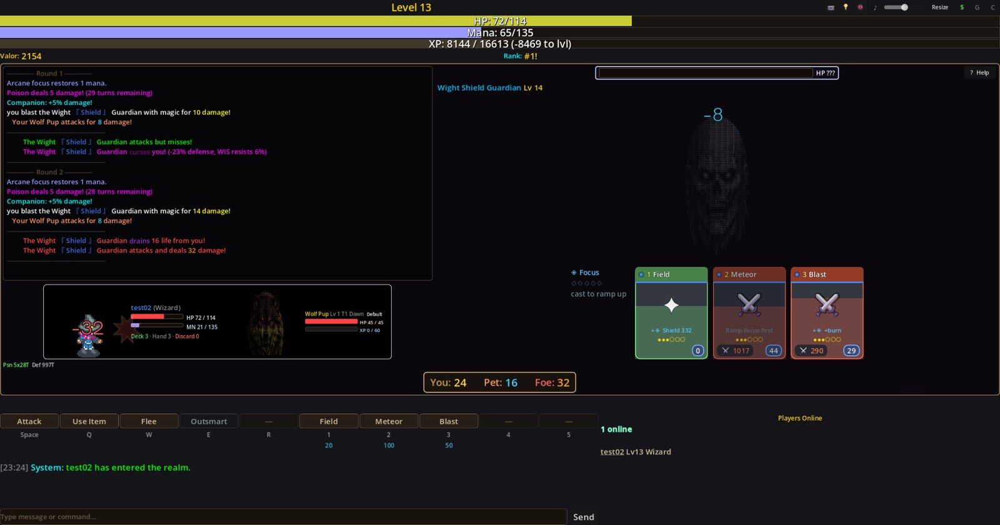
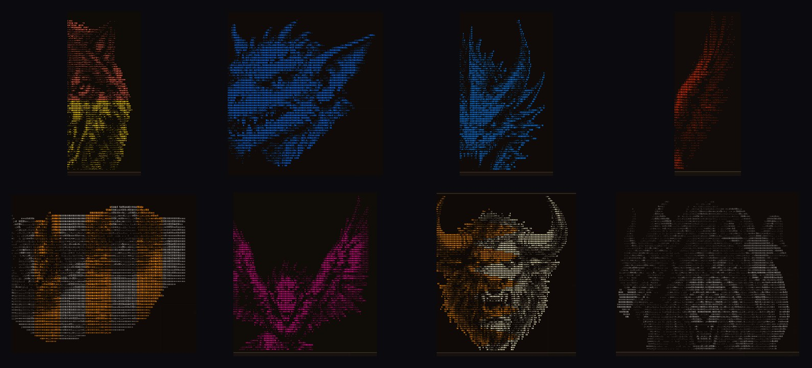
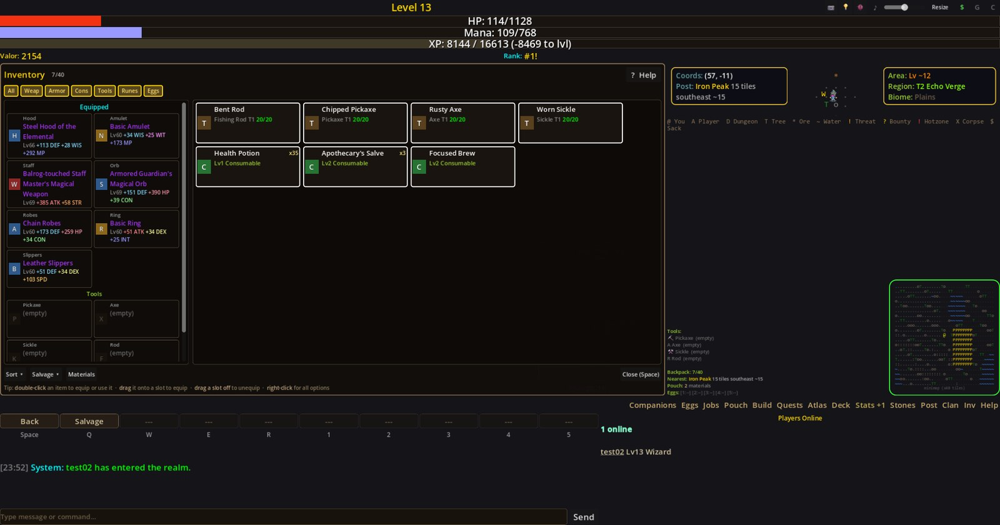

What’s in it
A free multiplayer RPG rendered entirely in text. This is the honest inventory — what you actually do, and what is actually built.
A run, start to finish
You make a character, and that character gets exactly one life. You take work from a trading post, walk out into ground that gets worse the further you go, and either come back or you don’t. When you don’t, your Sanctuary keeps your companions and stored gear, and you begin again as someone new at the same address.
The pull is the phantoms. They come up on their own, drawn to the living, and work their way toward the nearest town — so there is always somewhere that needs putting back down. They are also the only place companion eggs come from.
Combat is a deck, not a menu
- Each round deals a fresh hand of cards from your class deck. You play one, and the hand cycles
- Most abilities are variable cost — how much mana, stamina or energy you commit changes how hard the card lands, so a full dump is a real decision
- Class engines reward playing to type: Momentum for Warriors, Focus for Mages, Combo for Tricksters
- Companions fight beside you with their own attacks and passives
- Monster variants, Elite Champions, Empowered modifiers and Apex variants each change how a fight has to be approached
- Ability rank-ups and companion-influenced Imprints let you specialise a card the more you use it

Fighting together
- Parties of up to five. Walk into a monster together and you fight one shared enemy — not separate copies of it
- Everyone locks in simultaneously, then the round plays out actor by actor in speed order, so you can see who did what
- The monster acts against every member each round. A party is not a way to take less heat
- Buffs and items can be aimed at teammates or their companions — you pay the cost and your own stats set the strength, so support builds are worth playing
- Leadership rotates after each fight, so one player isn’t stuck doing all the walking, gathering and crafting. Gathering rewards are copied in full to every member rather than split
- Inside a trading post everyone moves freely; out in the world the party travels together and leaves together

Dungeons
- 53 dungeons — one for every monster type, each with its own boss and a Hard mode
- Multi-floor layouts with chests, traps, special rooms, and a stair you have to find
- Each has a hazard of its own: clinging webs, poison ground, blood fonts, updrafts, lava, sacred ground
- A guaranteed companion egg on a clear, plus cards that drop nowhere else
- Dungeons surface dynamically and push a threat corridor at nearby posts. Clearing one buys that town a real reprieve
- A Dungeon Atlas tracks what you have found, entered and cleared
Companions
- 50+ monster types hatched from eggs, each with colour variants and a border tier that scales its stats
- Four fusion modes — Same Type, Mixed T9, Hybrid, and Tier Ascension, which promotes a companion to the next tier outright
- Breeding, and a kennel holding 30–500, so a line outlasts any one of your characters
- Companions and their cards persist through permadeath. They are the continuity your characters aren’t

Characters & progression
- 9 classes across three archetypes — Warrior (Fighter, Barbarian, Paladin), Mage (Wizard, Sorcerer, Sage), Trickster (Thief, Ranger, Ninja)
- Paths — 54-node talent trees, one per archetype
- Unique items and set bonuses, plus chase affixes on epic-and-better gear
- Gear that grants +X to ability ranks, and equipment that shows on your character’s sprite
- Titles — Jarl, High King, Elder, Eternal — each with real powers, and a Valor leaderboard

The world
- A procedural world with 58 trading posts. Monster level is anchored to how far you are from one, so distance is difficulty
- Dynamic quests that scale to you, with no real-time cooldowns — re-run them as fast as you like
- Repeatable quest chains at T1–T3, and threat-relief work when a dungeon starts bleeding
- An Apex Frontier beyond 1500 tiles — Burning Reach, Frostbound Verge, Sundered Hollows, Cinder Wastes — with Apex variants and bonus XP
- Your Sanctuary survives every death, with a companion kennel and Fusion Station
Making things
- 5 crafting skills: Blacksmithing, Alchemy, Enchanting, Scribing, Construction
- Gathering jobs: Mining, Logging, Fishing, Foraging, Soldier — each with its own minigame
- Tempered crafting — risk extra materials for guaranteed bonus stats — and recipe discovery through exploring
- Runes that add affixes and procs to gear you already own
- 23 buildable structures, plus enclosures, bridges, guard posts, towers and Companion Stables
Economy
- A player market with supply-and-demand pricing and Valor as currency
- Roaming merchants that physically move stock between posts, plus specialty discounts and threat-zone price hikes
- Direct player-to-player trading of items, companions and eggs, with an account-level trade log
- A card market for earned companion and dungeon cards
Playing with people
- Clans with a shared 30-slot vault, banner colour, motto and online roster
- Friends that survive permadeath, with online status and AFK badges — and a block list for everyone else
- Colour-coded whisper, clan and party channels
- Mentor bonus — a Lv 20+ mentor partied with a new player grants the whole party +25% XP per kill
- Server-wide achievement announcements and leaderboard alerts
Starting out
- A guided intro, plus first-touch tutorial overlays that explain each system the first time you meet it
- Every panel has a ? Help button;
/topicslists every help topic - Beginner-friendly classes marked at character creation
- Resizable UI elements, and a launcher that keeps you current
“They do like their lists, don’t they. None of it will help you. Do come in anyway.”